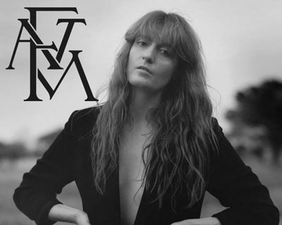

The 1975 are an English pop rock band from Manchester,
consisting of lead vocalist and rhythm guitarist Matthew
"Matty" Healy, lead guitarist Adam Hann,
bassist Ross MacDonald, and drummer George Daniel.

Florence and the Machine are an English indie rock band.
They formed in London in 2007, consisting of
vocalist Florence Welch, keyboardist Isabella Summers,
and a collaboration of other musicians.